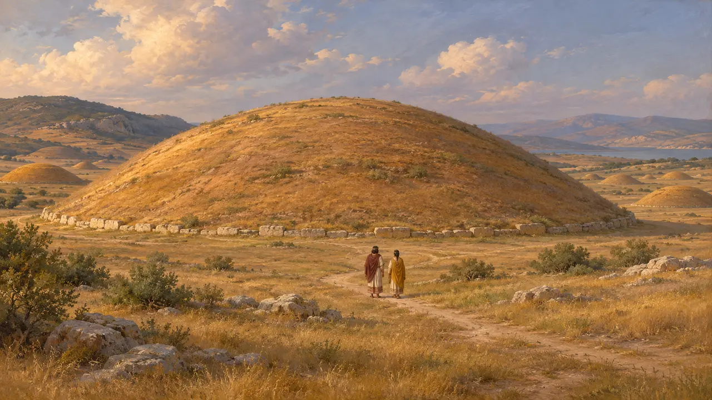
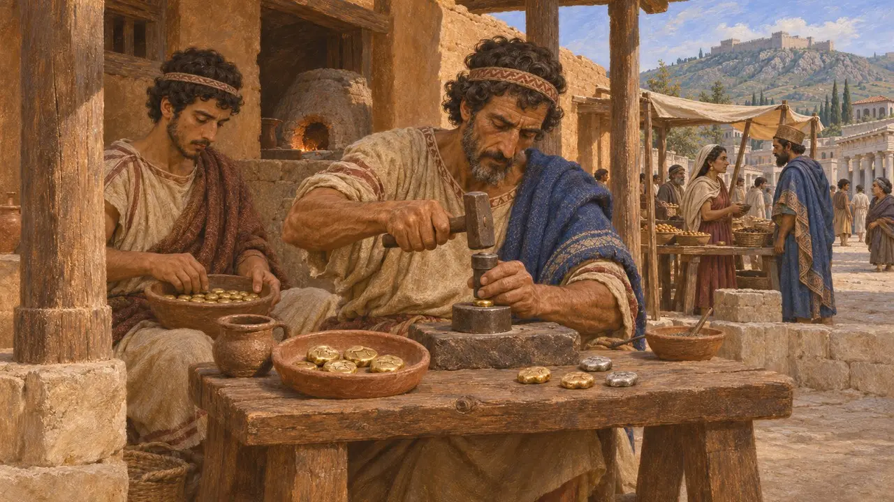
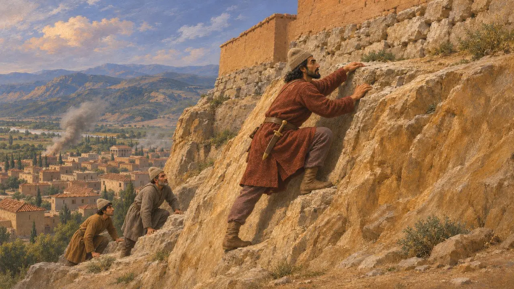
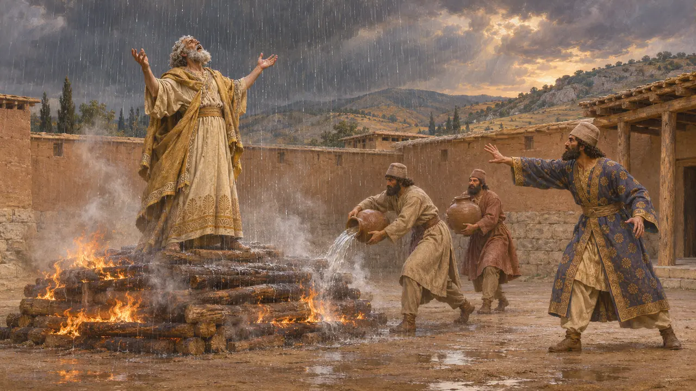
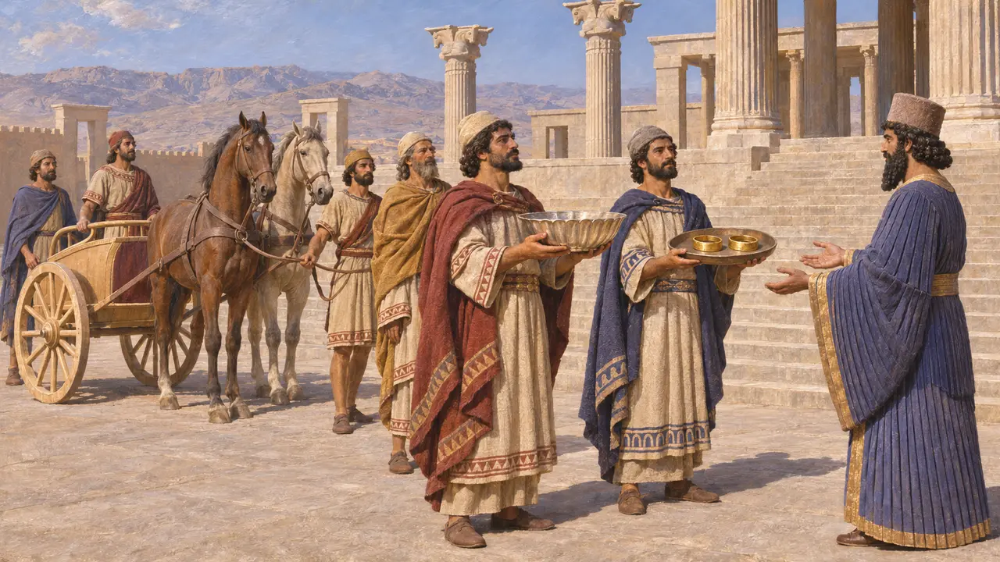
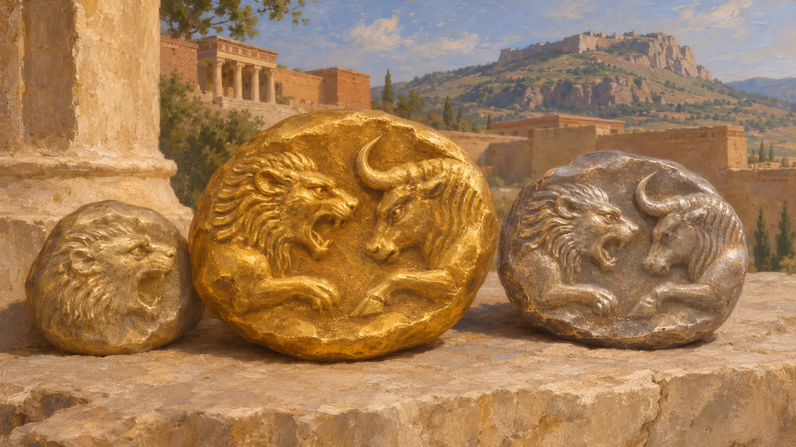

Die Lyder
Volk Westanatoliens, von Sardes aus regiert; ab den 540er Jahren v. Chr. eine persische Provinz
Im Spiel: Level 1: Das Grab des Gründers, Level 7: Sardes brennt
Die Lyder lebten in den Flusstälern des westlichen Anatoliens, ihre Hauptstadt Sardes lag unterhalb einer steilen Zitadelle. Unter den Königen aus dem Haus der Mermnaden beherrschten sie einen Großteil Anatoliens westlich des Halys und wurden durch das Gold des Paktolos reich. Nachdem Kyros in den 540er-Jahren Sardes eingenommen hatte, wurde Lydien zur persischen Provinz Sparda, von der aus die Statthalter des Königs die griechischen Städte der Ägäisküste im Blick behielten.
Im Spiel: Das Spiel behandelt Lydien als Handelspartner, der Geschenke aus Sardes schickt, und hebt dort lydische Aufgebote aus. Tatsächlich war Lydien um 498 eine tributpflichtige Provinz; Herodot berichtet, dass Lyder und Perser Sardes gemeinsam verteidigten.

Könige aus dem Haus der Mermnaden
Antiker BerichtHerodot verfolgt die Dynastie der Mermnaden von Gyges, der den Thron an sich riss, über Ardys, Sadyattes und Alyattes bis zu Kroisos. Diese Könige griffen die griechischen Städte der Küste an, und laut Herodot war Kroisos der Erste, der sie tributpflichtig machte. Er berichtet auch, eine Sonnenfinsternis habe eine Schlacht zwischen Alyattes und den Medern beendet, und ein Frieden habe daraufhin die Grenze am Halys festgelegt. Der große Grabhügel des Alyattes, den Herodot beschreibt, steht noch heute bei Bin Tepe nördlich von Sardes.
Herodotus 1.6-27, 1.74, 1.93

Die ersten Münzen
UmstrittenHerodot berichtet, die Lyder hätten als erstes Volk Münzen aus Gold und Silber geprägt und als erste Krämerläden betrieben. Ausgegrabene Elektronmünzen aus einem Depot im Artemision von Ephesos, die zu den frühesten überhaupt zählen, deuten auf einen lydischen oder ostgriechischen Ursprung um 600 oder kurz davor. Über die reinen Gold- und Silbermünzen, die man Kroiseiden nennt, streiten Historiker noch immer. Manche meinen, Kroisos selbst habe sie prägen lassen, andere schreiben sie den Persern nach der Eroberung zu.
Herodotus 1.94; A. Ramage and P. Craddock, King Croesus' Gold, 2000

Der Fall von Sardes
UmstrittenHerodot berichtet, Kroisos habe den Halys überschritten, sei in persisches Gebiet vorgedrungen und habe sich dann nach Sardes zurückgezogen. Er verlor die Stadt nach einer vierzehntägigen Belagerung, als ein mardischer Soldat einen unbewachten Teil des Burgfelsens erklomm. Ausgräber haben eine Zerstörungsschicht aus der Mitte des 6. Jahrhunderts v. Chr. mit Waffen und den Überresten von im Kampf Gefallenen gefunden. Die Datierung ist unsicher. Die Nabonid-Chronik verzeichnet einen Feldzug des Kyros im Jahr 547, doch der Name des Landes ist beschädigt, und viele bezweifeln, dass dort Lydien steht.
Herodotus 1.76-84; Nabonidus Chronicle; Sardis excavation reports

Kroisos auf dem Scheiterhaufen
Spätere LegendeHerodot berichtet, Kyros habe den gefangenen Kroisos auf einen Scheiterhaufen gesetzt, und Kroisos habe den Namen Solons gerufen. Als Kyros nachgab und die Flammen sich nicht mehr löschen ließen, sandte Apollon Regen. Der Dichter Bakchylides, der früher schrieb, lässt Kroisos den Scheiterhaufen aus freien Stücken besteigen, und Apollon entrückt ihn zu den Hyperboreern. Beide Fassungen sind als Lehrstücke über den Sturz der Hochmütigen gestaltet und können nicht als Berichte über das tatsächliche Geschehen gelten.
Herodotus 1.86-87; Bacchylides, Ode 3

Sardianer im Dienst des Königs
Zeitgenössisch belegtIn Behistun zählt Dareios Sparda zu den Ländern, die ihm zufielen. Seine Gründungsurkunde von Susa berichtet, Gold sei aus Sardes gebracht worden und Männer aus Sardes hätten Stein und Holz für den Palast bearbeitet. Auf den Treppen des Apadana in Persepolis bringt eine lydische Gesandtschaft Gefäße, Armreifen und einen Wagen. Das Lydische, eine anatolische Sprache mit eigenem Alphabet, ist in Inschriften aus Sardes erhalten, darunter eine spätere lydisch-aramäische Bilingue.
DB §6; DSf; Persepolis Apadana reliefs

Das Emblem neben dem Namen
Zeitgenössisch belegtLydiens Emblem im Spiel folgt den Münzen des Kroisos: die Vorderteile eines Löwen und eines Stiers einander zugewandt, um 560-546 in Gold und Silber geprägt. Älteres lydisches Elektron zeigte einen brüllenden Löwenkopf. Herodot sagt, die Lyder hätten als Erste Münzen geprägt.
Herodotus 1.94; J. Kroll, in N. Cahill (ed.), Love for Lydia, 2008
Quellen
- Herodotus, Histories, book 1
- Darius, Behistun inscription (DB)
- Darius, Susa foundation charter (DSf)
- P. Briant, From Cyrus to Alexander, 2002
- A. Ramage and P. Craddock, King Croesus' Gold, 2000
- Bacchylides, Ode 3